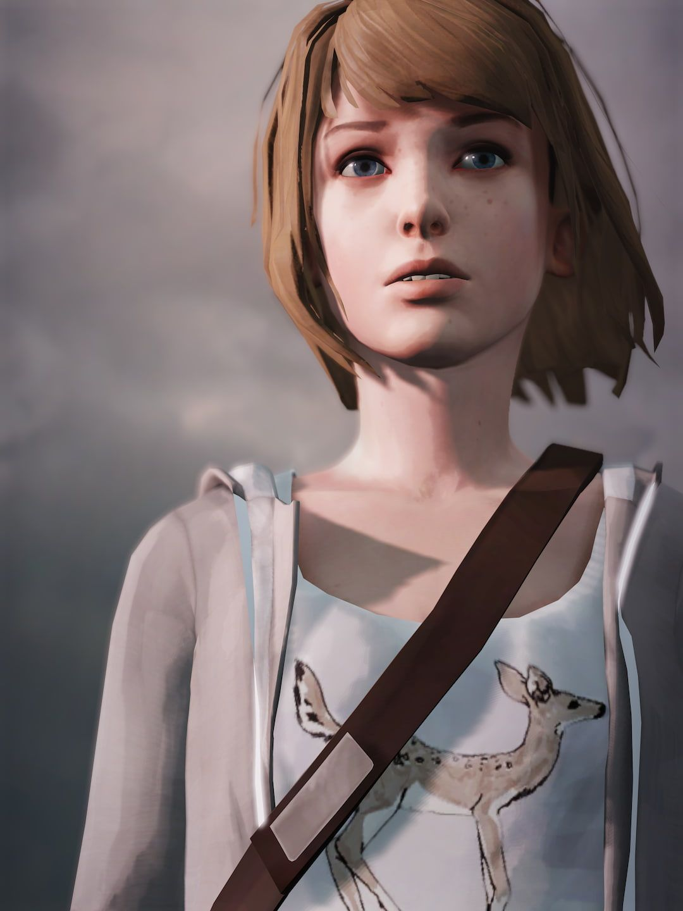
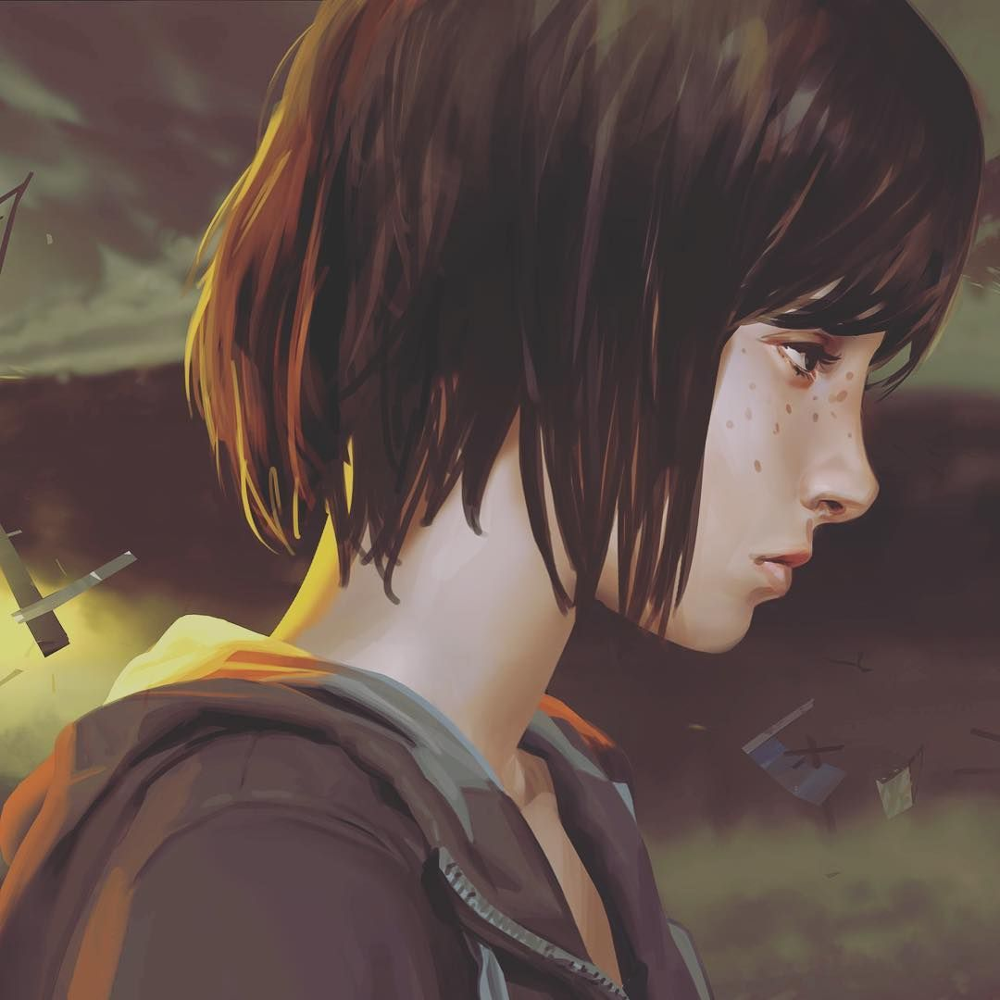

Max Caulfield
The DoeMaxine Caulfield, better known as Max, is the playable protagonist of Life is Strange. She is an 18-year-old aspiring photographer and senior at Blackwell Academy. She left her mom and dad in Seattle for the seaside town of Arcadia Bay, Oregon, where she grew up, to study photography at Blackwell Academy.
Nicknames: Mad Max, Super Max, The Blackwell Ninja, Time Master, Little Miss Wallflower.
Max is geeky, quite introverted and slightly self-conscious, particularly when it comes to her photography. According to Max, she prefers to observe the world around over participating in it. Because of this, several students, including Juliet Watson, think she doesn't care much about others. But on the contrary, she makes a genuine effort to show kindness to all of Blackwell's students.
She's a clear, deductive thinker, smart and sneaky, while also practical, reasonable and mature, in some aspects, for her age, especially compared to her best friend, Chloe. She is also brave, placing herself in harm's way to protect those she cares about.
"When a door closes, a window opens... Or, something like that."
- Full Name:
Maxine Caulfield - Age: 26
- Born: September 21, 1995
- Hometown: Arcadia Bay, Oregon
- Gender: Female
- Height: 5'5" (1.65m)
Max is the quintessential hipster, preferring an understated style that consists of simple T-shirts bearing logos and "generic jeans" (as Chloe calls them). She has auburn brown hair, blue eyes, and freckles. She appears to wear eye shadow and eyeliner, although this is also quite understated.
She has no tattoos or piercings that we know of. She wears a set of three colored bangles on her right wrist that appear to be silicone wristbands.